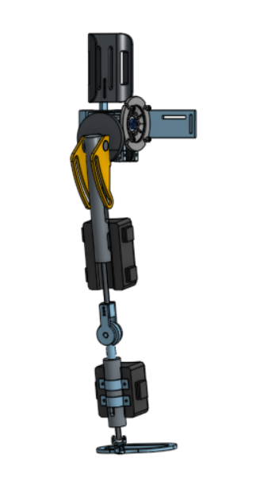
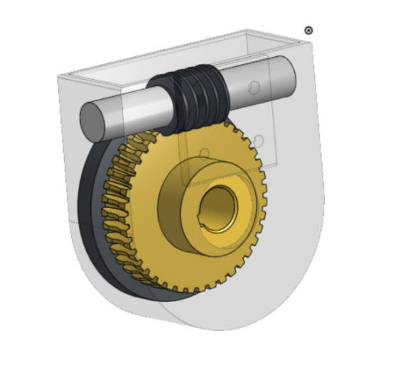
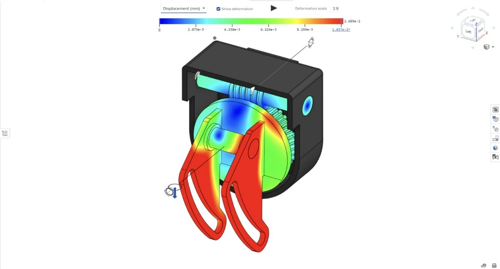
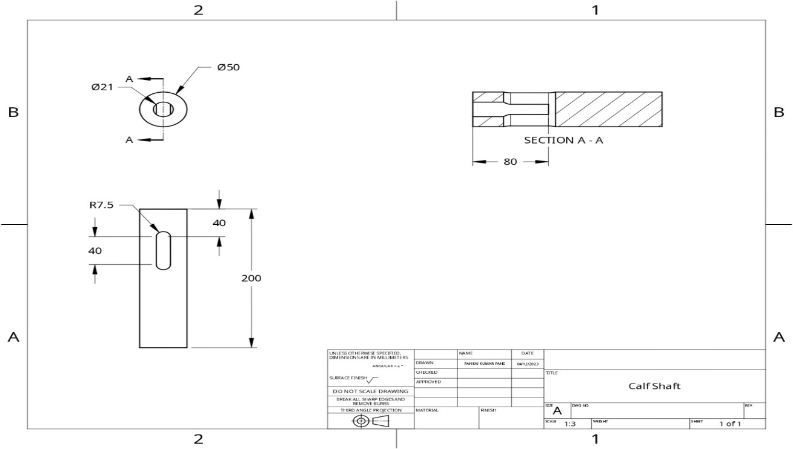
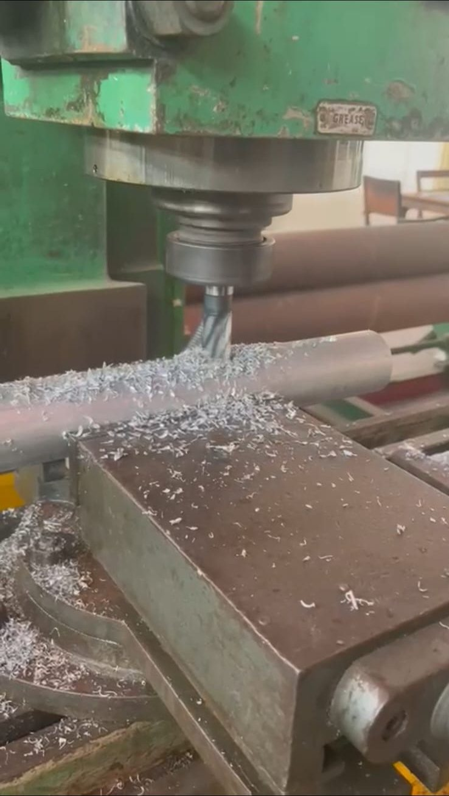
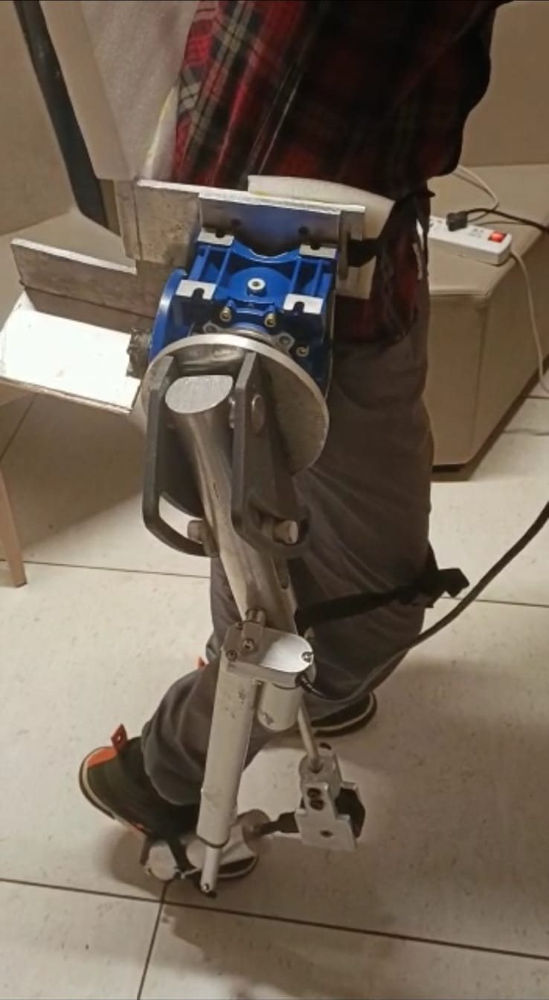

Work / P.04 · Case study
Medical Exoskeleton
Sized to a 78 kg user and a 150 Nm swing torque, machined by hand, and worn. The decision that got it built was giving up on making our own gearbox.
- Context
- Final-year capstone — B.Eng. Mechanical Engineering, Thapar Institute, 2022–23
- Team
- Five members. My role: team lead — load calculations, component sizing, material selection, fabrication
- Tools
- Onshape · FEA · lathe, mill, drill
- Outcome
- Working prototype at €300, fully reimbursed by the institute
Design case, then geometry
The devices that work are expensive and heavy, and in India the price is the reason most people never get one. So: assist standing and walking, stay light enough to wear, cost little enough to be reachable. Worst case for sizing was a 78 kg user and 150 Nm at the joint during leg swing; frame in aluminium 6061 at 110 MPa yield, factor of safety 4 per medical practice, shafts in 304 stainless.



Drawn, cut, worn



The margin is the finding. 10.7 MPa against 110 MPa yield is about ten times the requirement. The structure was never stress-limited — it was set by geometry, joint stiffness and the bought-in gearbox envelope. Which means it's carrying metal it doesn't need, on a device whose first constraint is weight.
What I'd do differently
- Spend the safety margin on weight. Ten times the required margin means thinner sections or pockets. The FEA to justify it already exists.
- Re-close the torque chain on the gearbox we actually fitted. Sized at 25:1, built around 20:1. It worked, but the numbers and the hardware have drifted apart.
- Instrument the test. "Stable and comfortable" is one user's opinion. Joint-angle traces and assistive torque over the gait cycle would show whether the help arrives at the right moment or just arrives.